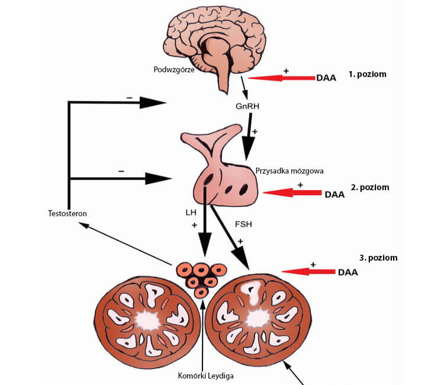

JAK POZBYĆ SIĘ ZAPALENIA GRUCZOŁU KROKOWEGO RAZ NA ZAWSZE W CIĄGU 1-2 MIESIĘCY W KAŻDYM WIEKU?
Przeprowadziliśmy WYWIAD ZE SPECJALISTĄ TOMASZEM DREWĄ, który opowiadał o nowej metodzie na PRZEWLEKŁE ZAPALENIE GRUCZOŁU KROKOWEGO, GRUCZOLAKA PROSTATY I PRZYWRÓCENIA POTENCJI.
FUNDUSZ ZDROWIA URUCHOMIŁ program dla pomocy cierpiącym na zapalenia gruczołu krokowego i dysfunkcji erotycznych! W ramach tego programu MOŻNA UZYSKAĆ NOWY ŚRODEK ze zniżką -50%
Opowiedzieć o nowym produkcie , poprosiliśmy Pana Tomasza Drewę.
„To był najtrudniejszy, ale najbardziej niezbędny produkt opracowany przez nasz Instytut Urologii”
Tomasz Drewa
specjalista od urologii, Wiceprezes
Towarzystwa Urologicznego. Jest znanym
członkiem wielu zagranicznych towarzystw naukowych.
Reporter: Panie Tomaszu, czy może Pan nam tak „na palcach” powiedzieć , co powoduje chorobę prostaty i spadek potencji, oraz jak można zatrzymać ten proces?
Tomasz Drewa: Spójrzcie, głównym zadaniem każdej osoby jest reprodukcja potomstwa. Wszystko jest zrobione tak, aby proces ten odbywa się bez zakłóceń. Każdy mężczyzna ma warunkowo 3 okresy. Kiedy rośnie, kiedy jest w stanie się rozmnażać i kiedy zanika. Jaki jest obecnie okres, ciało rozumie z poziomu testosteronu we krwi. Jest maksymalny w okresie zdolności rozmnażania – ponad 11 nmol/l. Z wiekiem (po 45 roku życia) maleje – mężczyzna przechodzi do trzeciego etapu. Tak powinno się zachodzić w normalnych warunkach – jest to w rzeczywistości naturalny proces. Wraz z wiekiem mężczyźni prowadzą mniej ruchliwy tryb życia, mniej uprawiają seks, w wyniku czego dochodzi do stagnacji w gruczole krokowym i powstaje przewlekłe zapalenie gruczołu krokowego
Ponadto poziom testosteronu zaczyna nienormalnie spadać wcześniej niż powinno być. Już po 30 roku życia jego poziom u 93% badanych przez nas mężczyzn wynosi średnio 5 nmol/l, co jest 2 razy niższe niż normalnie! Naturalnie prowadzi to do problemów z potencją i, oczywiście, te dolegliwości, które występują w przypadku braku normalnego dopływu krwi do narządów miednicy, pojawiają się znacznie wcześniej.
Reporter: W jaki sposób może pomóc mężczyznom?
Tomasz Drewa: Ważne jest, aby zrozumieć, że nie jest środkiem pobudzającym. Ma on na celu rozwiązanie dwóch problemów, a mianowicie aktywacji produkcji testosteronu przez organizm, a nie nieprawidłowe i ogólnie niebezpieczne dla układu krążenia rozszerzenie naczyń w pachwinie, jak to robią popularne środki pobudzające. A drugie to normalizacja pracy prostaty.
Substancje czynne, które zawiera , przyczyniają się do aktywnej produkcji hormonów luteinizujących i stymulujących pęcherzyki, które z kolei wpływają na przysadkę mózgową. A już przysadka mózgowa przyczynia się do produkcji hormonu testosteronu.
ma kompleksowe działanie na organizm. Nie chcę teraz szczegółowo opowiadać o reakcjach chemicznych zachodzących w organizmie, ponieważ wciąż niewiele osób je zrozumie. Chcę tylko zauważyć, że po krótkim czasie stosowania jednocześnie usuwa zapalenie gruczołu krokowego i wzmacnia erekcję. Następuje naturalne przywrócenie funkcji przysadki mózgowej i prostaty, a także normalizacja potencji, która pojawia się sama bez żadnych środków. W tym u osób w wieku powyżej 50-60 lat. Dzięki można mieć stabilną potencję nawet w starszym wieku.
Sam testosteron jest niezwykle przydatny dla mężczyzny, to właśnie jego brak prowadzi do starzenia się organizmu i rozwoju różnych chorób. Często testosteron jest nawet przepisywany mężczyznom po 50 roku życia.

Proces wytwarzania testosteronu przez komórki Leydiga, „sygnał” jest dostarczany przez przysadkę mózgową, na który wpływa nowy środek .
Reporter: Normalizacja produkcji testosteronu to bardzo proste rozwiązanie, prawda? Nikt nie wymyślił tego wcześniej?
Tomasz Drewa: Rozwiązanie jest proste. Jednak wpływ na ten proces nie jest tak prosty. Substancja, która może pośrednio wpływać na przysadkę mózgową, została odkryta przez naszych naukowców. Przez cały ten czas tworzyliśmy preparat na jego podstawie. Obecnie jest jedynym produktem, który tak skutecznie zwalcza męską impotencję seksualną. Środki pobudzające nie mają takiego efektu. Ważne jest również to, że nie ma skutków ubocznych. W ogóle. Co również wyróżnia go korzystnie wśród produktów zawierających sildenafil.
Jak uzyskać ze zniżką 50%?
Tomasz Drewa: Ponieważ jest opracowaniem naszych specjalistów, Fundusz Zdrowia uruchomił program, w ramach którego można otrzymać środek za 50% ceny.
Myślę, że to jest bardzo ważna i prawidłowa inicjatywa, ponieważ problemy z prostatą i potencją pojawiają się u mężczyzn coraz częściej i często prowadzą do zniszczenia rodzin, a także utraty zdrowia. Myślę, że ten lek uratuje wiele rodzin, a także zmniejszy ilość przypadków stosowania przez mężczyzn środków pobudzających, które wyrządzają więcej szkody niż pożytku.
Reporter: Jak uzyskać środek wg tego programu? Co jest potrzebne do tego?
Tomasz Drewa: To bardzo proste!
1. Musisz przebywać na
terytorium
Polski.
2. Złóż zamówienie.
3. Specjalista z
Działu Obsługi skontaktuje się z tobą przez telefon i pomoże ci zamówić środek, a
także opowie, jak prawidłowo go stosować.
Od redakcji "eHealth":
Uwaga! 22.22.2222 – OSTATNI DZIEŃ PRZYJMOWANIA ZAMÓWIEŃ NA ! Następnie środek będzie dostępny w cenie rynkowej!

392 komentarzy

Jan Polanecki
Dziękuję, ciekawe. Problemy z potencją pojawiają
się
coraz częściej. Zamówiłem sobie . Mam nadzieję, że to pomoże.
35 minut temu
Michał Dołhań
Dosłownie tydzień temu specjalista przepisał mi ten
nowy środek)).Byłem na wizycie tydzień temu, a on powiedział, że był na
konferencji na temat urologii i tam dużo dyskutowali o i z Panem
Tomaszem też jest znajomy, mówi, że naprawdę bardzo szanowany specjalista,
który nie mówiłby o żadnych bzdurach. Ogólnie rzecz biorąc, nakazał mi kupić
ten środek w ramach programu, zamówiłem go wczoraj, czekam na dostawę.
Myślę, że pomoże.
godzinę temu
Łukasz Szczerbiński
U nas mogą zrobić coś naprawdę dobrego?
godzinę temu
Czesław Wojnarowski
Jestem jednym z tych, którzy już zamówili
i zdążyli go wypróbować. Naprawdę pomaga bardzo dobrze. Potencja
pojawia
się prawie od razu po stosowaniu. Mocna. Ale najbardziej spodobało mi się
to, że
ma skumulowany efekt. Oznacza to, że im częściej bierzesz, tym lepiej. Już
zaczęła pojawiać się poranna erekcja, a jej nie było przez długi czas.
Ogólnie
rzecz biorąc, polecam spróbować wszystkim, tym bardziej, póki jest
w
tak niskiej cenie.
godzinę temu
Paweł Sokołów
Środek pomaga! Sprawdziłem to na sobie! Mam
przewlekłe
zapalenie gruczołu krokowego, kilka razy w roku stosuję terapie. Przebieg
terapii
zawsze kosztuje mnie średnio 2 tys. zł. Zamówiłem sobie ze zniżką i
po
jednej kuracji udało mi się usunąć stan zapalny w prostacie, poziom
leukocytów
spadł do normy, co oznacza, że często przestałem biegać do toalety. Więc
polecam!
godzinę temu
Maria Wilk
Muszę mężowi zamówić. W ciągu ostatnich 2 lat
można policzyć na palcach ile razy uprawialiśmy seks. Wszystko przez jego
problemy z prostatą. Nie wiem, co robić. Chociaż ma tylko 49 lat. Znam
mężczyzn,
którzy w tym wieku są zdolni na dużo rzeczy.
2 godziny temu
Adrian Zienkowicz
Wczoraj już go zabrałem. Postanowiłem wziąć całą
kurację. Specjalista mi polecił.
2 godziny temu
Bartłomiej Dacko
Przeczytałem więcej o tym produkcie i
zamówiłem na
oficjalnej
stronie internetowej. Zobaczmy, jak pomoże!
3 godziny temu
Wiktor Babiec
W pełni potwierdzam! jest doskonałym
środkiem.
Miałem problemy z potencją przez 3 lata. Ostatnio generalnie bardzo rzadko
wstawał, moja żona chciała złożyć pozew o rozwód. Ale w końcu wszystko
się
udało, potencja została przywrócona. Teraz stoi jak skała wtedy, kiedy
jest
to konieczne!
3 godziny temu
Jerzy Macak
Obecnie stosuję go przez 4 tygodni + wykonuję
fizjoterapię. Powiem, że pomaga dobrze, pozbyłem się zapalenia gruczołu
krokowego na etapie zaostrzenia, a potencja naprawdę stała się znacznie
lepsza.
Wcześniej stosowałem różne środki + także fizjoterapię i powiem, że terapia
była
znacznie dłuższa i pomagało gorzej, więc różnica naprawdę jest!
3 godziny temu
Denis Pabiasz
Mój przyjaciel pracuje w dziedzinie medycyny,
właśnie od niego dowiedziałem się o tym programie. Dlatego zapewniam, że
jest to
bezpieczne. Można składać zamówienie.
3 godziny temu
Kazimierz Dubiel
Dziękuję! Oglądałem kiedyś program o męskim
zdrowiu. Również
opowiadali o tym nowym produkcie. Specjaliści bardzo go polecali.
3 godziny temu
Agata Mielska
Przeczytaliśmy z mężem komentarze i zdaliśmy sobie
sprawę, że trzeba zamówić! Idę zamawiać. Tym bardziej, że nie na oślep
bierzesz, a po konsultacji ze specjalistą.
3 godziny temu
Patryk Jewtoszuk
Zamówiłem! Dziękuję!
4 godziny temu
Artem Żuk
Zamówiłem. Cena jest naprawdę 2 razy mniejsza.
4 godziny temu
Roman Sabiło
Faceci, uprawiajcie więcej sportu, a nie będziecie
potrzebowali tych wszystkich środków!.
4 godziny temu
Katarzyna Bąk
Dzięki za link! Mąż bardzo cierpi z powodu tego, że
nie
może mnie zadowolić. Z tego powodu stracił poczucie własnej wartości. Bardzo
kocham mojego męża, jestem gotowa oddać za niego życie. Ale nie wiem, jak mu
pomóc.
Przeczytałam o tym nowym produkcie i zamówiłam! Cała nadzieja na nich.
5 godzin temu
Anna Parnak
Zamówiłam dla męża. Nie da się go zmusić pójść
do specjalisty!
5 godzin temu
Marek Gajewski
Teraz w rzeczywistości wielu specjalistów
zalecają
go. Niedawno robiłem badania, na szczęście mam się dobrze, ale specjalista
powiedział, że aby zachować zdrowie, można wziąć 1 kurację .
6 godzin temu